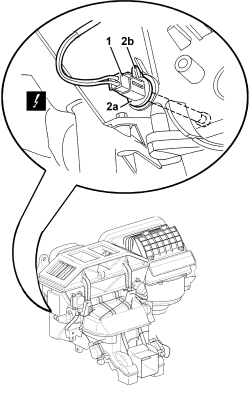

5010D20 MIXED AIR TEMPERATURE SENSOR - R+R FOLLOWING ELECTRICAL WIRING CHECK OPERATION
- Path
- Procedures > 50 AUXILIARY UNITS > 5010 CLIMATE CONTROL - MISCELLANEOUS > 5010D AIR TEMPERATURE RECORDING SYSTEM > 5010D20 MIXED AIR TEMPERATURE SENSOR - R+R FOLLOWING ELECTRICAL WIRING CHECK OPERATION
- Kind
- repair procedure (removal / refitting; the operation number is the code)
- Applies to
- all engines; all production periods
- Interactive page
- https://sloeber94.github.io/elrnDB-aBrrSpdr/en/#/946002257
Applies to: all engines; all production periods
 Removing
Removing
 Refitting
Refitting1. Working under the left side of the dashboard, disconnect the electrical connection.
Description | Component |
|---|---|
UPPER MIXED AIR TEMPERATURE SENSOR |
2. Turn sensor (2a) to undo retainer (2b), then remove (bayonet mount).

Applies to: all engines; all production periods
Refitting
Removing- Check that the sensor is not damaged and, if necessary, conduct an electrical test.
- Fit the sensor and turn in its seat to do up the retainer.
- Connect the electrical connection.
Topics linked from this page (1)
Topics that link to this page (6)
- L001 CLIMATE CONTROL NOT WORKING (UNDER ANY CIRCUMSTANCES)
- L010 CLIMATE CONTROL NOT COOLING
- L012 CLIMATE CONTROL DOES NOT COOL TO THE DESIRED TEMPERATURE
- 5040C16 AIR CONDITIONER HEATER/DISTRIBUTION UNIT HOUSING - DISMANTLE AT BENCH
- E6020 AIR CONDITIONER - WIRING DIAGRAM
- E6020 AIR CONDITIONER - COMPONENT LOCATION